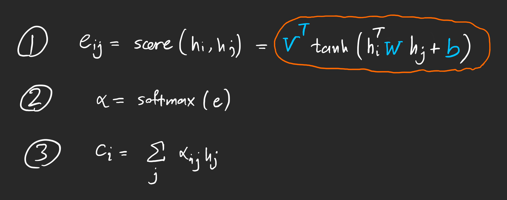

GRU + Attention
Contents
GRU + Attention#
Overview#
This notebook extends the GRU Classifier model (movie watching) described in the paper by adding an Attention Layer
Attention used here was first presented by Dzmitry Bahdanau, et al. in their paper Neural Machine Translation by Jointly Learning to Align and Translate.
Data#
Data provided is already preprocessed but needs to be converted in model usabale format
import torch
import pickle
import numpy as np
import torch.nn as nn
import torch.nn.functional as F
import matplotlib.pyplot as plt
with open('Data/HCP_movie_watching.pkl','rb') as f:
TS = pickle.load(f)
print(TS.keys())
dict_keys(['testretest', 'twomen', 'bridgeville', 'pockets', 'overcome', 'inception', 'socialnet', 'oceans', 'flower', 'hotel', 'garden', 'dreary', 'homealone', 'brokovich', 'starwars'])
Dataset organization#
TS is a dictionary with movie names as keys
Value against each key is a numpy array of dimensions [#participants, #time points, #ROIs]
Note that the testretest movie appears on all 4 runs for a participant, therefore the value has dimensions [#runs, #participants, #time points, #ROIs]
rel = {}
l = 0
seq_length = 0
time_changes = []
for movie_name, ts in TS.items():
rel[movie_name] = l
l += 1
seq_length = max(seq_length, ts.shape[-2])
time_changes.append(ts.shape[-2])
print(movie_name, ts.shape)
time_changes = np.array(time_changes)
time = [i for i in range(1,seq_length+1)]
testretest (4, 176, 84, 300)
twomen (176, 245, 300)
bridgeville (176, 222, 300)
pockets (176, 189, 300)
overcome (176, 65, 300)
inception (176, 227, 300)
socialnet (176, 260, 300)
oceans (176, 250, 300)
flower (176, 181, 300)
hotel (176, 186, 300)
garden (176, 205, 300)
dreary (176, 143, 300)
homealone (176, 233, 300)
brokovich (176, 231, 300)
starwars (176, 256, 300)
Padding sequences#
To deal with varying time points. For data with time points < seq_length , I have paded them with -100.. I have used the seq_length = 260 (maximum of the time_point).
Final features array is a 2D array, with shape = (260,300).
The following block shows above mentioned discussion
train_feature = []
test_feature = []
train_target = []
test_target = []
for movie_name, ts in TS.items():
pep = 0
if movie_name != "testretest":
for i in ts:
pep += 1
if (pep <= 100):
if i.shape[0]>seq_length:
k = i[:seq_length][:]
train_feature.append(k)
train_target.append(rel[movie_name])
k = i[i.shape[0]-seq_length:][:]
train_feature.append(k)
train_target.append(rel[movie_name])
elif i.shape[0]<seq_length:
k = [[-100]*300]*seq_length
k[seq_length-i.shape[0]:] = i
train_feature.append(k)
k = [[rel[movie_name]] for _ in range(i.shape[0])] + [[-100] for _ in range(seq_length-i.shape[0])]
train_target.append(k)
else:
train_feature.append(i)
train_target.append([[rel[movie_name]] for _ in range(seq_length)])
else:
if i.shape[0]>seq_length:
k = i[:seq_length][:]
test_feature.append(k)
test_target.append(rel[movie_name])
k = i[i.shape[0]-seq_length:][:]
test_feature.append(k)
test_target.append(rel[movie_name])
elif i.shape[0]<seq_length:
k = [[-100]*300]*seq_length
k[seq_length-i.shape[0]:] = i
test_feature.append(k)
k = [[rel[movie_name]] for _ in range(i.shape[0])] + [[-100] for _ in range(seq_length-i.shape[0])]
test_target.append(k)
else:
test_feature.append(i)
test_target.append([[rel[movie_name]] for _ in range(seq_length)])
print(pep)
else:
for jj in ts:
pep = 0
for i in jj:
pep += 1
if (pep <= 106):
if i.shape[0]>seq_length:
k = i[:seq_length][:]
train_feature.append(k)
train_target.append(rel[movie_name])
k = i[i.shape[0]-seq_length:][:]
train_feature.append(k)
train_target.append(rel[movie_name])
elif i.shape[0]<seq_length:
k = [[-100]*300]*seq_length
k[seq_length-i.shape[0]:] = i
train_feature.append(k)
k = [[rel[movie_name]] for _ in range(i.shape[0])] + [[-100] for _ in range(seq_length-i.shape[0])]
train_target.append(k)
else:
train_feature.append(i)
train_target.append([[rel[movie_name]] for _ in range(seq_length)])
else:
if i.shape[0]>seq_length:
k = i[:seq_length][:]
test_feature.append(k)
test_target.append(rel[movie_name])
k = i[i.shape[0]-seq_length:][:]
test_feature.append(k)
test_target.append(rel[movie_name])
elif i.shape[0]<seq_length:
k = [[-100]*300]*seq_length
k[seq_length-i.shape[0]:] = i
test_feature.append(k)
k = [[rel[movie_name]] for _ in range(i.shape[0])] + [[-100] for _ in range(seq_length-i.shape[0])]
test_target.append(k)
else:
test_feature.append(i)
test_target.append([[rel[movie_name]]*15 for _ in range(seq_length)])
print(pep)
Training, Validation, Test#
With the data in required shape, The following shows the split into training, validation, and test sets.
from torch.utils.data import TensorDataset, DataLoader
train_data = TensorDataset(torch.from_numpy(np.array(train_feature)).float(),torch.from_numpy(np.array(train_target)).float())
test_data = TensorDataset(torch.from_numpy(np.array(test_feature)).float(),torch.from_numpy(np.array(test_target)).float())
from torch.utils.data.sampler import SubsetRandomSampler
batch_size = 32
valid_data = 0.246
t_train = len(train_data)
data_no = list(range(t_train))
np.random.shuffle(data_no)
split_no = int(valid_data*t_train)
train,valid = data_no[split_no:],data_no[:split_no]
train_sampler = SubsetRandomSampler(train)
valid_sampler = SubsetRandomSampler(valid)
train_loader = DataLoader(train_data,batch_size=batch_size,sampler=train_sampler)#drop_last=True)
valid_loader = DataLoader(train_data,sampler=valid_sampler,batch_size=batch_size)#drop_last=True)
test_loader = DataLoader(test_data, batch_size=batch_size,shuffle = True)
iter(train_loader).next()[0].shape
torch.Size([32, 260, 300])
is_cuda = torch.cuda.is_available()
if is_cuda:
device = torch.device("cuda")
else:
device = torch.device("cpu")
device
device(type='cuda')
Models#
Implementing the Attention(Bahdanau) Model#
Following figures shows the steps involved in: Blue are the parameters
class Attention(nn.Module):
def __init__(self, hidden_dim):
super().__init__()
self.hidden_dim = hidden_dim
self.W = nn.Linear(2*hidden_dim, hidden_dim, bias=False)
self.V = nn.Parameter(torch.rand(hidden_dim))
self.softmax = nn.Softmax(dim = 1)
def forward(self, x, hj):
'''
PARAMS:
hj: prev hidden_state: [b, n_layers, hidden_dim]
x : gru layer output: [b, seq_len, hidden_dim]
RETURN:
att_weights: [b, src_seq_len]
'''
hj = hj.permute(1, 0, 2)
batch_size = x.size(0)
seq_len = x.size(1)
hj = hj[:, -1, :].unsqueeze(1).repeat(1, seq_length, 1) #[b, seq_len, hidden_dim]
tanh_W_s_h = torch.tanh(self.W(torch.cat((x, hj), dim=2))) #[b, seq_len, hidden_dim]
tanh_W_s_h = tanh_W_s_h.permute(0, 2, 1) #[b, hidden_dim, seq_len]
V = self.V.repeat(batch_size, 1).unsqueeze(1) #[b, 1, hidden_dim]
e = torch.bmm(V, tanh_W_s_h).squeeze(1) #[b, seq_len]
att_weights = self.softmax(e) #[b, seq_len]
return att_weights
GRU Classifier Model as described in the paper#

class GRU_RNN(nn.Module):
def __init__(self, input_dim, output_dim,hidden_dim,n_layers,att=True,drop_prob=0.0):
super(GRU_RNN, self).__init__()
self.output_dim = output_dim
self.n_layers = n_layers
self.hidden_dim = hidden_dim
self.att = att
self.gru = nn.GRU(input_dim,hidden_dim,num_layers=n_layers,dropout=0.0,batch_first=True)
self.linear = nn.Linear(hidden_dim,output_dim)
if att:
self.attention = Attention(hidden_dim)
self.linear = nn.Linear(2*hidden_dim,output_dim)
self.dropout = nn.Dropout(0.3)
self.func = nn.Softmax(dim=-1)
def forward(self, input_x, hj, prev_x):
xi,hi = self.gru(input_x,hj) # xi: [b,seq_len,hidden_dim] | hi: [n_layers,b,hidden_dim]
if self.att:
att_weights = self.attention(xi,hj).unsqueeze(1)
weighted_sum = torch.bmm(att_weights,prev_x).squeeze(1)
x = torch.cat((weighted_sum,xi[:,-1,:]), dim=1).unsqueeze(2) # [b,hidden*2,1]
x = x.repeat(1,1,seq_length)
x = x.permute(0,2,1)
x = self.linear(x)
else:
#x = self.dropout(x)
x = self.linear(xi)
return x,hi,xi
def init_hidden(self, batch_size):
weight = next(self.parameters()).data
hidden = weight.new(self.n_layers, batch_size, self.hidden_dim).zero_().to(device)
return hidden
Train & Test Function#
def train(epochs,train_loader,net,valid_loader,optimizer,criterion,name):
clip = 3 # gradient clipping
net.to(device)
net.train()
valid_loss_min = np.Inf
valid_losses = []
train_losses = []
for e in range(epochs):
h = net.init_hidden(batch_size)
prev_x = torch.zeros(batch_size,seq_length,hidden_dim).to(device)
nn.init.kaiming_uniform_(prev_x)
train_loss = []
valid_loss = []
for inputs, labels in train_loader:
#torch.autograd.set_detect_anomaly(True)
inputs, labels = inputs.to(device), labels.type(torch.LongTensor).to(device)
h = h.data
net.zero_grad()
output, h, prev_x = net(inputs, h.detach(), prev_x.detach())
loss = criterion(output.permute(0,2,1), labels.squeeze())
loss.backward()
nn.utils.clip_grad_norm_(net.parameters(), clip)
optimizer.step()
train_loss.append(loss.item())
val_h = net.init_hidden(batch_size)
val_prev_x = torch.zeros(batch_size,seq_length,hidden_dim).to(device)
nn.init.kaiming_uniform_(val_prev_x)
val_losses = []
net.eval()
for inputs, labels in valid_loader:
val_h = val_h.data
inputs, labels = inputs.to(device), labels.type(torch.LongTensor).to(device)
output, val_h, val_prev_x = net(inputs, val_h,val_prev_x)
val_loss = criterion(output.permute(0,2,1),labels.squeeze())
val_losses.append(val_loss.item())
if np.mean(val_losses) <= valid_loss_min:
print('Validation loss decreased ({:.6f} --> {:.6f}). Saving model ...'.format(valid_loss_min, np.mean(val_losses)))
best_epoch = e
torch.save(net.state_dict(), f'{name}.pt')
valid_loss_min = np.mean(val_losses)
net.train()
valid_losses.append(np.mean(val_losses))
train_losses.append(np.mean(train_loss))
print('Epoch: {}/{} \tTraining Loss: {:.6f} \tValidation Loss: {:.6f}'.format(e+1,epochs,np.mean(train_loss),np.mean(val_losses)))
return train_losses,valid_losses,best_epoch
def calc(pred,lab):
pred_2 = torch.where(lab!=-100,pred,100)
al = np.array((pred_2-lab).to('cpu'))
z = al.shape[0] - np.sum(al==200,axis=0)
y = al.shape[0] - np.count_nonzero(al, axis=0)
return y/z
def test(test_loader,net):
net.to(device)
net.eval()
h = net.init_hidden(batch_size)
prev_x = torch.zeros(batch_size,seq_length,hidden_dim).to(device)
nn.init.kaiming_uniform_(prev_x)
T_pred = None
T_lab = None
for inputs, labels in test_loader:
h = h.data
inputs, labels = inputs.to(device), labels.type(torch.LongTensor).to(device)
output, h,prev_x = net(inputs, h,prev_x)
pred = torch.round(output.squeeze())
top_value, top_index = torch.max(pred,2,keepdim=True)
if T_pred == None:
T_pred = top_index.squeeze()
T_lab = labels.squeeze()
else:
T_pred = torch.cat((T_pred,top_index.squeeze()),0)
T_lab = torch.cat((T_lab,labels.squeeze()),0)
return T_pred,T_lab
Training with Attention Layer#
epochs = 45
input_dim = 300
hidden_dim = 32
output_dim = 15
n_layers = 1
lr = 0.002
model = GRU_RNN(input_dim, output_dim, hidden_dim, n_layers)
optimizer = torch.optim.Adam(model.parameters(), lr=lr)
criterion = nn.CrossEntropyLoss(ignore_index=-100)
print(model)
GRU_RNN(
(gru): GRU(300, 32, batch_first=True)
(linear): Linear(in_features=64, out_features=15, bias=True)
(attention): Attention(
(W): Linear(in_features=64, out_features=32, bias=False)
(softmax): Softmax(dim=1)
)
(dropout): Dropout(p=0.3, inplace=False)
(func): Softmax(dim=-1)
)
train_losses,valid_losses,best_epoch = train(epochs,train_loader,model,valid_loader,optimizer,criterion,"Att")
Validation loss decreased (inf --> 2.006807). Saving model ...
Epoch: 1/45 Training Loss: 2.309377 Validation Loss: 2.006807
Validation loss decreased (2.006807 --> 1.490849). Saving model ...
Epoch: 2/45 Training Loss: 1.616253 Validation Loss: 1.490849
Validation loss decreased (1.490849 --> 1.126686). Saving model ...
Epoch: 3/45 Training Loss: 1.104379 Validation Loss: 1.126686
Validation loss decreased (1.126686 --> 0.925915). Saving model ...
Epoch: 4/45 Training Loss: 0.756070 Validation Loss: 0.925915
Validation loss decreased (0.925915 --> 0.787860). Saving model ...
Epoch: 5/45 Training Loss: 0.523056 Validation Loss: 0.787860
Validation loss decreased (0.787860 --> 0.716097). Saving model ...
Epoch: 6/45 Training Loss: 0.369060 Validation Loss: 0.716097
Validation loss decreased (0.716097 --> 0.694975). Saving model ...
Epoch: 7/45 Training Loss: 0.265166 Validation Loss: 0.694975
Validation loss decreased (0.694975 --> 0.637512). Saving model ...
Epoch: 8/45 Training Loss: 0.197626 Validation Loss: 0.637512
Validation loss decreased (0.637512 --> 0.620646). Saving model ...
Epoch: 9/45 Training Loss: 0.150444 Validation Loss: 0.620646
Validation loss decreased (0.620646 --> 0.596620). Saving model ...
Epoch: 10/45 Training Loss: 0.107565 Validation Loss: 0.596620
Epoch: 11/45 Training Loss: 0.085124 Validation Loss: 0.606575
Epoch: 12/45 Training Loss: 0.077519 Validation Loss: 0.600386
Validation loss decreased (0.596620 --> 0.587720). Saving model ...
Epoch: 13/45 Training Loss: 0.055841 Validation Loss: 0.587720
Validation loss decreased (0.587720 --> 0.580249). Saving model ...
Epoch: 14/45 Training Loss: 0.042999 Validation Loss: 0.580249
Validation loss decreased (0.580249 --> 0.575917). Saving model ...
Epoch: 15/45 Training Loss: 0.035121 Validation Loss: 0.575917
Validation loss decreased (0.575917 --> 0.567610). Saving model ...
Epoch: 16/45 Training Loss: 0.029745 Validation Loss: 0.567610
Epoch: 17/45 Training Loss: 0.025780 Validation Loss: 0.582132
Validation loss decreased (0.567610 --> 0.565170). Saving model ...
Epoch: 18/45 Training Loss: 0.022562 Validation Loss: 0.565170
Epoch: 19/45 Training Loss: 0.019582 Validation Loss: 0.579765
Epoch: 20/45 Training Loss: 0.018027 Validation Loss: 0.576997
Validation loss decreased (0.565170 --> 0.552930). Saving model ...
Epoch: 21/45 Training Loss: 0.016025 Validation Loss: 0.552930
Epoch: 22/45 Training Loss: 0.014306 Validation Loss: 0.565635
Epoch: 23/45 Training Loss: 0.012810 Validation Loss: 0.567177
Epoch: 24/45 Training Loss: 0.011727 Validation Loss: 0.566910
Epoch: 25/45 Training Loss: 0.010648 Validation Loss: 0.568923
Epoch: 26/45 Training Loss: 0.009766 Validation Loss: 0.566880
Epoch: 27/45 Training Loss: 0.008963 Validation Loss: 0.569184
Epoch: 28/45 Training Loss: 0.008553 Validation Loss: 0.571746
Epoch: 29/45 Training Loss: 0.007956 Validation Loss: 0.556795
Epoch: 30/45 Training Loss: 0.007214 Validation Loss: 0.575923
Epoch: 31/45 Training Loss: 0.006636 Validation Loss: 0.573904
Epoch: 32/45 Training Loss: 0.006204 Validation Loss: 0.575610
Epoch: 33/45 Training Loss: 0.005811 Validation Loss: 0.579940
Epoch: 34/45 Training Loss: 0.005404 Validation Loss: 0.580460
Epoch: 35/45 Training Loss: 0.005194 Validation Loss: 0.596743
Epoch: 36/45 Training Loss: 0.004780 Validation Loss: 0.588687
Epoch: 37/45 Training Loss: 0.004553 Validation Loss: 0.593364
Epoch: 38/45 Training Loss: 0.004280 Validation Loss: 0.586664
Epoch: 39/45 Training Loss: 0.004110 Validation Loss: 0.568410
Epoch: 40/45 Training Loss: 0.003838 Validation Loss: 0.597671
Epoch: 41/45 Training Loss: 0.003681 Validation Loss: 0.575927
Epoch: 42/45 Training Loss: 0.003502 Validation Loss: 0.596138
Epoch: 43/45 Training Loss: 0.003375 Validation Loss: 0.594827
Epoch: 44/45 Training Loss: 0.003160 Validation Loss: 0.601283
Epoch: 45/45 Training Loss: 0.003023 Validation Loss: 0.593819
x = [i for i in range(1,epochs+1)]
xi = [i for i in range(0,epochs+5,5)]
xi[0] = 1
f, axis = plt.subplots(1,1)
f.set_figwidth(20)
f.set_figheight(5)
plt.subplots_adjust(top=0.8, wspace=0.2,hspace=0.3)
axis.plot(x,train_losses)
axis.plot(x,valid_losses)
axis.axvline(best_epoch, color='black')
axis.set_xticks(xi)
axis.set_xlabel("Epochs",fontweight="bold",color = 'Black', fontsize='15', horizontalalignment='center')
axis.set_ylabel("Loss",fontweight="bold",color = 'Black', fontsize='15', horizontalalignment='center')
axis.set_title("Losses (with Attention)",fontweight='bold',color = 'Black', fontsize='15', horizontalalignment='center')
axis.legend(["Training Loss","Valid Loss",f"Best Epoch= {best_epoch}"])
<matplotlib.legend.Legend at 0x18e1d51d520>
model = GRU_RNN(input_dim, output_dim, hidden_dim, n_layers)
model.load_state_dict(torch.load('Att.pt'))
<All keys matched successfully>
pred,lab = test(test_loader,model)
time_point_acc = calc(pred,lab)
Training without Attention Layer#
epochs = 45
input_dim = 300
hidden_dim = 32
output_dim = 15
n_layers = 1
lr = 0.006
model2 = GRU_RNN(input_dim, output_dim, hidden_dim, n_layers,att=False)
optimizer2 = torch.optim.Adam(model2.parameters(), lr=lr)
criterion2 = nn.CrossEntropyLoss(ignore_index=-100)
print(model2)
GRU_RNN(
(gru): GRU(300, 32, batch_first=True)
(linear): Linear(in_features=32, out_features=15, bias=True)
(dropout): Dropout(p=0.3, inplace=False)
(func): Softmax(dim=-1)
)
train_losses_1,valid_losses_1,best_epoch_1 = train(epochs,train_loader,model2,valid_loader,optimizer2,criterion2,"GRU")
Validation loss decreased (inf --> 2.514711). Saving model ...
Epoch: 1/45 Training Loss: 2.642447 Validation Loss: 2.514711
Validation loss decreased (2.514711 --> 2.477094). Saving model ...
Epoch: 2/45 Training Loss: 2.524199 Validation Loss: 2.477094
Validation loss decreased (2.477094 --> 2.256657). Saving model ...
Epoch: 3/45 Training Loss: 2.380000 Validation Loss: 2.256657
Validation loss decreased (2.256657 --> 2.150577). Saving model ...
Epoch: 4/45 Training Loss: 2.110968 Validation Loss: 2.150577
Validation loss decreased (2.150577 --> 2.046364). Saving model ...
Epoch: 5/45 Training Loss: 1.985462 Validation Loss: 2.046364
Validation loss decreased (2.046364 --> 1.885488). Saving model ...
Epoch: 6/45 Training Loss: 1.877682 Validation Loss: 1.885488
Epoch: 7/45 Training Loss: 1.879785 Validation Loss: 1.959972
Validation loss decreased (1.885488 --> 1.841028). Saving model ...
Epoch: 8/45 Training Loss: 1.746551 Validation Loss: 1.841028
Epoch: 9/45 Training Loss: 1.640337 Validation Loss: 1.877271
Validation loss decreased (1.841028 --> 1.657340). Saving model ...
Epoch: 10/45 Training Loss: 1.605484 Validation Loss: 1.657340
Epoch: 11/45 Training Loss: 1.528806 Validation Loss: 1.680470
Validation loss decreased (1.657340 --> 1.616356). Saving model ...
Epoch: 12/45 Training Loss: 1.460237 Validation Loss: 1.616356
Validation loss decreased (1.616356 --> 1.584099). Saving model ...
Epoch: 13/45 Training Loss: 1.384452 Validation Loss: 1.584099
Epoch: 14/45 Training Loss: 1.371751 Validation Loss: 1.587913
Epoch: 15/45 Training Loss: 1.340513 Validation Loss: 1.619639
Epoch: 16/45 Training Loss: 1.441806 Validation Loss: 1.613558
Epoch: 17/45 Training Loss: 1.590330 Validation Loss: 1.754066
Epoch: 18/45 Training Loss: 1.409531 Validation Loss: 1.631758
Epoch: 19/45 Training Loss: 1.497058 Validation Loss: 1.743879
Epoch: 20/45 Training Loss: 1.523004 Validation Loss: 1.927641
Epoch: 21/45 Training Loss: 1.479274 Validation Loss: 1.679840
Epoch: 22/45 Training Loss: 1.423733 Validation Loss: 1.639656
Validation loss decreased (1.584099 --> 1.573532). Saving model ...
Epoch: 23/45 Training Loss: 1.446770 Validation Loss: 1.573532
Validation loss decreased (1.573532 --> 1.530106). Saving model ...
Epoch: 24/45 Training Loss: 1.304457 Validation Loss: 1.530106
Epoch: 25/45 Training Loss: 1.332929 Validation Loss: 1.654152
Epoch: 26/45 Training Loss: 1.366287 Validation Loss: 1.842592
Epoch: 27/45 Training Loss: 1.333861 Validation Loss: 1.973706
Epoch: 28/45 Training Loss: 1.323880 Validation Loss: 1.640465
Epoch: 29/45 Training Loss: 1.280767 Validation Loss: 1.595056
Epoch: 30/45 Training Loss: 1.284469 Validation Loss: 1.635570
Epoch: 31/45 Training Loss: 1.271734 Validation Loss: 1.617834
Epoch: 32/45 Training Loss: 1.211857 Validation Loss: 1.545995
Epoch: 33/45 Training Loss: 1.448346 Validation Loss: 1.871462
Epoch: 34/45 Training Loss: 1.465626 Validation Loss: 1.797023
Epoch: 35/45 Training Loss: 1.344708 Validation Loss: 1.616982
Epoch: 36/45 Training Loss: 1.404427 Validation Loss: 1.844604
Epoch: 37/45 Training Loss: 1.507101 Validation Loss: 1.813380
Epoch: 38/45 Training Loss: 1.438006 Validation Loss: 1.766430
Epoch: 39/45 Training Loss: 1.315362 Validation Loss: 1.642372
Epoch: 40/45 Training Loss: 1.376340 Validation Loss: 1.728020
Epoch: 41/45 Training Loss: 1.349790 Validation Loss: 1.672401
Epoch: 42/45 Training Loss: 1.292160 Validation Loss: 1.589431
Epoch: 43/45 Training Loss: 1.343364 Validation Loss: 1.710599
Epoch: 44/45 Training Loss: 1.313771 Validation Loss: 1.549394
Epoch: 45/45 Training Loss: 1.235761 Validation Loss: 1.607271
x = [i for i in range(1,epochs+1)]
xi = [i for i in range(0,epochs+5,5)]
xi[0] = 1
f, axis = plt.subplots(1,1)
f.set_figwidth(20)
f.set_figheight(5)
plt.subplots_adjust(top=0.8, wspace=0.2,hspace=0.3)
axis.plot(x,train_losses_1)
axis.plot(x,valid_losses_1)
axis.axvline(best_epoch_1, color='black')
axis.set_xticks(xi)
axis.set_xlabel("Epochs",fontweight="bold",color = 'Black', fontsize='15', horizontalalignment='center')
axis.set_ylabel("Loss",fontweight="bold",color = 'Black', fontsize='15', horizontalalignment='center')
axis.set_title("Losses (without Attention)",fontweight='bold',color = 'Black', fontsize='15', horizontalalignment='center')
axis.legend(["Training Loss","Valid Loss",f"Best Epoch= {best_epoch_1}"]);
model2 = GRU_RNN(input_dim, output_dim, hidden_dim, n_layers,att=False)
model2.load_state_dict(torch.load('GRU.pt'))
<All keys matched successfully>
pred1,lab = test(test_loader,model2)
time_point_acc1 = calc(pred1,lab)
Testing#
Accuracy with Attention Layer#
f, ax = plt.subplots(1,1)
f.set_figwidth(19)
f.set_figheight(5)
ax.plot(time,time_point_acc)
ax.set_xticks(time_changes, minor=True)
ax.yaxis.grid(True,linestyle='-.', linewidth=0.5, which='both')
ax.xaxis.grid(True,linestyle='-', linewidth=0.5, which='minor')
ax.set_xlabel("Time Points",fontweight="bold",color = 'Black', fontsize='15', horizontalalignment='center')
ax.set_ylabel("Accuracy",fontweight="bold",color = 'Black', fontsize='15', horizontalalignment='center')
ax.set_title("Accuracies (with Attention)",fontweight='bold',color = 'Black', fontsize='15', horizontalalignment='center');
Accuracy without Attention Layer#
f, ax = plt.subplots(1,1)
f.set_figwidth(19)
f.set_figheight(5)
ax.plot(time,time_point_acc1)
ax.set_xticks(time_changes, minor=True)
ax.yaxis.grid(True,linestyle='-.', linewidth=0.5, which='both')
ax.xaxis.grid(True,linestyle='-', linewidth=0.5, which='minor')
ax.set_xlabel("Time Points",fontweight="bold",color = 'Black', fontsize='15', horizontalalignment='center')
ax.set_ylabel("Accuracy",fontweight="bold",color = 'Black', fontsize='15', horizontalalignment='center')
ax.set_title("Accuracies (without Attention)",fontweight='bold',color = 'Black', fontsize='15', horizontalalignment='center');
Comparison#
f, ax = plt.subplots(1,1)
f.set_figwidth(20)
f.set_figheight(6)
ax.plot(time,time_point_acc)
ax.plot(time,time_point_acc1)
ax.set_xticks(time_changes, minor=True)
ax.yaxis.grid(True,linestyle='-.', linewidth=0.5, which='both')
ax.xaxis.grid(True,linestyle='-', linewidth=0.5, which='minor')
ax.legend(["Attention","GRU"])
ax.set_xlabel("Time Points",fontweight="bold",color = 'Black', fontsize='15', horizontalalignment='center')
ax.set_ylabel("Accuracy",fontweight="bold",color = 'Black', fontsize='15', horizontalalignment='center')
ax.set_title("Comparison",fontweight='bold',color = 'Black', fontsize='15', horizontalalignment='center');
with open('acc.npy', 'wb') as f:
np.save(f, time_point_acc)
np.save(f, time_point_acc1)
Conclusion#
Adding an Attention Layer has increased the model accuracy as expected. The model furthur can be extended/improved by using other methods such as in: transformers notebook